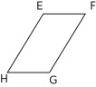

|
Chapitre 19
|
- Parallélogrammes
|
Activité Introduction
-
Les segments [AC] et [BD] ci-contre ont le même milieu O.
- Quelle semble être la nature du quadrilatère ABCD ?
-
Quelle est la symétrique par rapport à O :
- de la droite (AB) ?
- de la droite (AD) ?
-
En déduire que le quadrilatère ABCD est un parallélogramme. Expliquer.
On dit que ABCD est un parallélogramme de centre O.

-
- Construire un parallélogramme IJKL de centre O dont les diagonales [IK] et [JL] sont perpendiculaires en O.
- Construire un parallélogramme EFGH de centre O dont les diagonales [EG] et [FH] ont la même longueur.
- Construire un parallélogramme MNPQ de centre O dont les diagonales [MP] et [NQ] sont perpendiculaires et de même longueur.
- Que semble-t-on pouvoir dire de plus concernant la nature de chacun des trois parallélogrammes construits précédemment ?
Parallélogramme :
Définition :
Un parallélogramme est un polygone a quatre côté (un quadrilatère) dont les côtés opposés sont parallèles.
Exemple :

EFGH est un parallélogramme si $(EF)\parallel(GH)$ et $(EH)\parallel(FG)$.
Propriétés :
Si un quadrilatère a ses côtés opposés parallèles, alors c'est un parallélogramme.
Si un quadrilatère (non croisé) a ses côtés opposés de même longueur, alors c'est parallélogramme.
Si un quadrilatère a ses diagonales qui se coupent en leur milieu, alors c'est un parallélogramme.
Si un quadrilatère (non croisé) a deux côtés opposés parallèles et de même longueur, alors c'est un parallélogramme.
Si un quadrilatère a ses angles opposés égaux, alors c'est un parallélogramme.
Remarque :
-
La somme de deux angles consécutifs dans un parallèlogramme est égale à 180°
Si un quadrilatère est un parallélogramme, alors il possède un centre de symétrie : le point d'intersection de ses diagonales.
Parallèlogramme particuliers :
Rappels sur les quadrilatères :